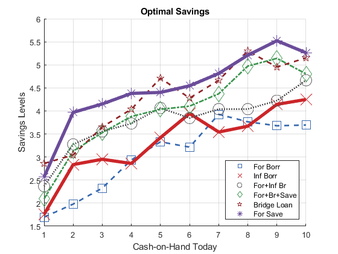
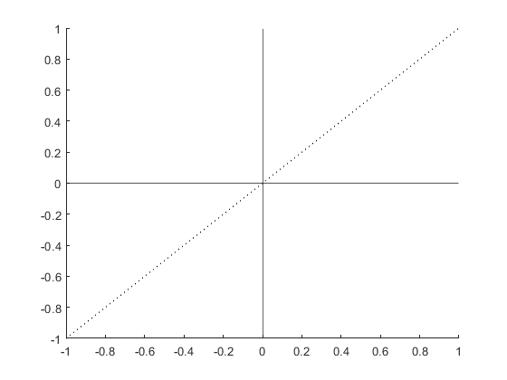

Graph: Line and Related Plots
back to Fan's Reusable Matlab Codes Table of Content.
Contents
Six lines Plot
colors from optimal colors.
close all figure(); hold on; blue = [57 106 177]./255; red = [204 37 41]./255; black = [83 81 84]./255; green = [62 150 81]./255; brown = [146 36 40]./255; purple = [107 76 154]./255; cl_colors = {blue, red, black, ... green, brown, purple}; cl_legend = {'For Borr', 'Inf Borr', 'For+Inf Br', 'For+Br+Save', 'Bridge Loan', 'For Save'}; cl_scatter_shapes = {'s','x','o','d','p','*'}; cl_linestyle = {'--','-',':','-.','--','-'}; it_sca_bs = 20; cl_scatter_csizes = {10*it_sca_bs, 20*it_sca_bs, 10*it_sca_bs, 10*it_sca_bs, 5*it_sca_bs, 8*it_sca_bs}; it_line_bs = 2; cl_line_csizes = {1*it_line_bs, 2*it_line_bs, 1*it_line_bs, 1*it_line_bs, 1*it_line_bs, 2*it_line_bs}; it_x_groups_n = length(cl_scatter_csizes); it_x_n = 10; % Generate Random Data rng(123); mat_y = rand([it_x_n, it_x_groups_n]); mat_y = mat_y + sqrt(1:it_x_groups_n); mat_y = mat_y + log(1:it_x_n)'; ar_x = 1:1:it_x_n; ar_it_graphs_run = 1:6; it_graph_counter = 0; for it_fig = ar_it_graphs_run % Counter it_graph_counter = it_graph_counter + 1; % Y Outcome ar_y = mat_y(:, it_fig)'; % Color and Size etc it_csize = cl_scatter_csizes{it_fig}; ar_color = cl_colors{it_fig}; st_shape = cl_scatter_shapes{it_fig}; st_lnsty = cl_linestyle{it_fig}; st_lnwth = cl_line_csizes{it_fig}; % plot scatter and include in legend ls_chart(it_graph_counter) = scatter(ar_x, ar_y, it_csize, ar_color, st_shape); % plot line do not include in legend line = plot(ar_x, ar_y); line.HandleVisibility = 'off'; line.Color = ar_color; line.LineStyle = st_lnsty; line.HandleVisibility = 'off'; line.LineWidth = st_lnwth; % Legend to include cl_legend{it_graph_counter} = cl_legend{it_fig}; end % Legend legend(ls_chart, cl_legend, 'Location', 'southeast'); % labeling title('Optimal Savings'); ylabel('Savings Levels'); xlabel('Cash-on-Hand Today'); grid on; snapnow;
Horizontal and Vertical Lines and 45 Degree
figure(); xline0 = xline(0); xline0.HandleVisibility = 'off'; yline0 = yline(0); yline0.HandleVisibility = 'off'; yline0.LineWidth = 1; hline = refline([1 0]); hline.Color = 'k'; hline.LineStyle = ':'; hline.HandleVisibility = 'off'; snapnow close all